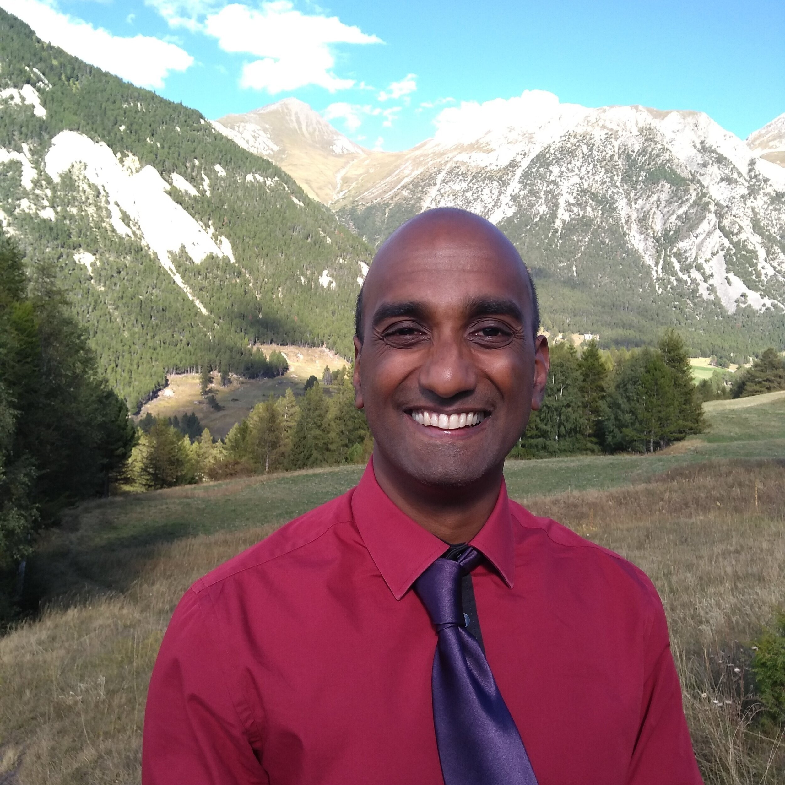

40 ans, vit à Grenoble
Etudiant en informatique
Kinésithérapeute et formateur bilingue, actuellement en reconversion vers le développement web. Autonome, rigoureux, multilingue et passionné par les nouvelles technologies.
Lors de formations continues de kinésithérapeute, je suis en charge de la traduction consécutive du cours du formateur. Je traduis les questions des participants et veille à la bonne intéraction des participants avec l'enseignant.
Responsable du recrutement et de la formation de l'équipe pour me succéder, j'ai été en charge d'une équipe de 5 personnes pour la reprise de toutes mes activités de traduction et marketing
J'ai été responsable de la traduction de la revue Phyio Network pour la France, revue d'origine australienne importée en France par l'agence EBP. J'ai été chargé de traduire les réseaux sociaux et tous autres types de contenu
Spécialisé dans l'épaule et la colonne, je soigne des patients au sein d'un cabinet libéral
Découvrez mon site internet
Membre du jury d'examen pratique pour les étudiants en kinésithérapie, j'évalue les étudiants lors de démonstrations pratiques des techniques et du raisonnement clinique appris en cours.
J'ai assisté plusieurs experts comptables quand la quantification de pertes financières lors de litiges. Certaines de mes tâches comportaient la relecture de documents comptables et juridique, des tâches administratives, le résumé de documents et la réalisation de tableaux Excel
J'ai représenté des clients en droit social lors d'audience auprès de l'appeals tribunal à Londres. Mes tâches incluaient une veille juridique, la récolte d'informations auprès du client et de professionnels, la rédaction du plaidoyer, la préparation du client, la représentation lors de l'audience
J'ai conseillé la population sur des questions juridiques variées : droit du travail, droit de la famille, prestations sociales et le logement. J'ai également aidé à la rédaction de lettres officielles et à la préparation de documents administratifs.
| Catégorie | Détails |
|---|---|
| Langages de programmation | HTML, CSS, JavaScript, Python |
| Langues | Anglais (bilingue), Allemand (courant) |
| Outils | GitHub, Klaviyo, suite Office |